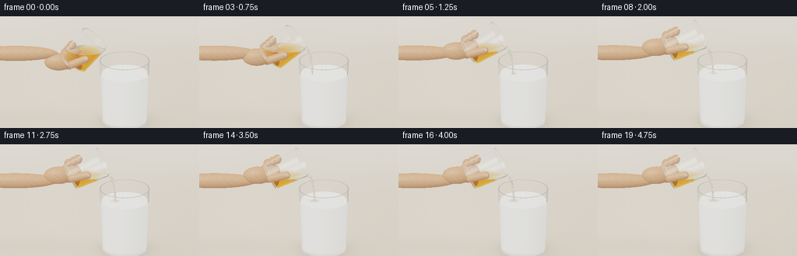
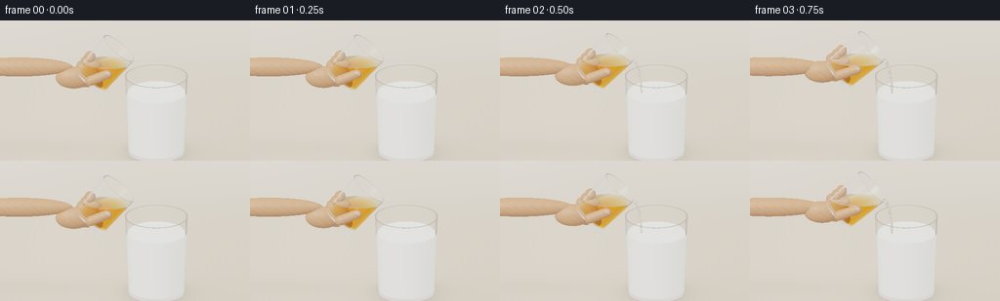

CODING AGENTS AS PIXEL WORLD MODELS
traex/GPT-6.1-Sol · phygen_137
点击播放 · 原生 RGB 像素
逐轮保存的候选
回放视频、检查图与代码变化。
每份候选均可单独播放。实际图片检查记录在下方工具轨迹中。
候选 01播放与检查图
点击播放 · 原生 RGB 像素


展开代码变化
--- 上一保存版本
+++ 本次保存版本
@@ -0,0 +1,391 @@
+"""A deterministic, analytical ray-traced tabletop honey pour. No external renderer."""
+import math
+import json
+from pathlib import Path
+import numpy as np
+from PIL import Image
+import artifact_io
+
+ROOT = Path(__file__).resolve().parent
+SPEC = json.loads((ROOT / 'task_spec.json').read_text())
+W,H = SPEC['width'],SPEC['height']
+SS=2
+DT=np.float64
+
+
+def unit(v):
+ return v / np.maximum(np.linalg.norm(v,axis=-1,keepdims=True),1e-12)
+
+
+def smooth(a,b,x):
+ q=np.clip((x-a)/(b-a),0,1)
+ return q*q*(3-2*q)
+
+
+def rot_y(a):
+ return np.array([[np.cos(a),0,np.sin(a)],[0,1,0],[-np.sin(a),0,np.cos(a)]])
+
+
+class Scene:
+ def __init__(self,t):
+ self.t=t
+ tilt=math.radians(39+25*smooth(.05,1.8,t))
+ self.R=rot_y(tilt)
+ self.axis=self.R[:,2]
+ self.r=.43
+ self.cuph=.99
+ self.lip=np.array([.30+.075*smooth(.3,1.8,t),-.025,2.22+.025*smooth(.5,2,t)])
+ top=self.lip-self.R[:,0]*self.r
+ self.cupbase=top-self.axis*self.cuph
+ # Surface stays horizontal; tilting shrinks the retained liquid volume.
+ self.honeylevel=self.lip[2]-.065*(1-smooth(.06,.6,t))
+ self.rec=np.array([.79,0,.03])
+ self.milklevel=1.445+.04*smooth(.35,4.75,t)
+ self.geoms=[]
+ self.add_glass(self.rec,np.eye(3),.615,.695,1.79,.032,.065,0)
+ self.add_glass(self.cupbase,self.R,.388,.43,.99,.028,.055,1)
+ # milk free surface and honey free surface
+ self.geoms.append(('liquid',self.rec,np.eye(3),self.milklevel,0))
+ self.geoms.append(('liquid',self.cupbase,self.R,self.honeylevel,1))
+ self.flow=smooth(.18,.62,t)
+ self.impact=np.array([self.lip[0]+.16,-.025,self.milklevel])
+ if self.flow>0:
+ drop=self.lip[2]-self.milklevel
+ # A slightly drawn-out, unbroken viscous rope with a rounded meniscus.
+ points=[]
+ for q in np.linspace(0,1,21):
+ x=self.lip[0]+.16*(1-np.exp(-3*q))/(1-np.exp(-3))
+ y=-.025+.007*np.sin(5*q-2*t)*q
+ z=self.lip[2]-.01-drop*q
+ points.append(np.array([x,y,z]))
+ self.impact=points[-1].copy(); self.impact[2]=self.milklevel
+ for i in range(len(points)-1):
+ q=i/(len(points)-1)
+ radius=(.037-.014*q)*self.flow*(1+.032*np.sin(t*2.8-q*5))
+ self.geoms.append(('capsule',points[i],points[i+1],radius,4))
+ # Honey coils gently on the surface, not an explosive splash.
+ age=max(0,t-.55)
+ if age>0:
+ count=20
+ old=None
+ for k in range(count):
+ q=k/(count-1)
+ phase=2*np.pi*(q*1.05+t*.20)
+ rr=(.027+.10*q)*smooth(0,.8,age)
+ p=self.impact+np.array([rr*np.cos(phase),.66*rr*np.sin(phase),.005+.007*(1-q)])
+ if old is not None:
+ self.geoms.append(('capsule',old,p,.014*self.flow*(1-.35*q),4))
+ old=p
+ # A hand enters from the left and holds the lower end of the small tumbler.
+ base=self.cupbase
+ b=base+self.axis*.13
+ self.skin=[]
+ self.add_ellipsoid(np.array([-2.23,.05,2.02])+np.array([0,0,.02*smooth(0,2,t)]),np.diag([1.18,.205,.21]))
+ self.add_ellipsoid(b+np.array([-.45,.055,-.045]),np.diag([.40,.22,.245]))
+ self.add_ellipsoid(b+np.array([-.13,.12,.005]),self.R@np.diag([.28,.20,.31]))
+ # Back fingers around the base; thumb in front, below the honey body.
+ for offset in [0,.15,.29]:
+ p=base+self.axis*(.13+offset)+self.R[:,0]*(-.31)
+ self.add_ellipsoid(p+np.array([-.035,.17,-.018]),self.R@np.diag([.118,.18,.12]))
+ a=base+self.axis*.16+np.array([-.11,-.345,.01])
+ b=base+self.axis*.36+np.array([.13,-.345,.015])
+ self.geoms.append(('capsule',a,b,.108,5))
+ self.thumbtip=b
+ self.add_ellipsoid(b+np.array([.006,-.079,.010]),self.R@np.diag([.065,.024,.083]),6)
+
+ def add_ellipsoid(self,c,A,mat=5):
+ self.geoms.append(('ellipsoid',c,np.linalg.inv(A),mat))
+
+ def add_glass(self,c,R,r0,r1,h,thick,base,idx):
+ slope=(r1-r0)/h
+ # Actual thick glass, hollow interior, polished flat lip, heavy base.
+ self.geoms += [('cone',c,R,r0,slope,0,h,1,idx),
+ ('cone',c,R,r0-thick,slope,base,h,-1,idx),
+ ('disk',c,R,0,0,r0,-1,idx),
+ ('disk',c,R,base,0,r0-thick+slope*base,1,idx),
+ ('disk',c,R,h,r1-thick,r1,1,idx)]
+
+ def local(self,p,idx):
+ if idx==0: return p-self.rec
+ return (p-self.cupbase)@self.R
+
+ def medium(self,p):
+ med=np.zeros(len(p),np.int8)
+ for idx,vals in enumerate([(.615,.695,1.79,.032,.065),(.388,.43,.99,.028,.055)]):
+ r0,r1,h,thick,base=vals
+ q=self.local(p,idx); z=q[:,2]
+ rad=np.sqrt(q[:,0]**2+q[:,1]**2)
+ r=r0+(r1-r0)/h*z
+ outer=(z>=0)&(z<=h)&(rad<=r)
+ inner=(z>=base)&(z<=h)&(rad<r-thick)
+ med[outer&~inner]=1
+ if idx==0:
+ med[inner&(p[:,2]<=self.milklevel)]=3
+ else:
+ med[inner&(p[:,2]<=self.honeylevel)]=2
+ # rope is amber liquid as well
+ if self.flow>.01:
+ q=(self.lip[2]-.01-p[:,2]) / max(self.lip[2]-self.milklevel,.01)
+ qs=np.clip(q,0,1)
+ cx=self.lip[0]+.16*(1-np.exp(-3*qs))/(1-np.exp(-3))
+ cy=-.025+.007*np.sin(5*qs-2*self.t)*qs
+ radius=(.037-.014*qs)*self.flow*1.04
+ inside=(q>=0)&(q<=1)&((p[:,0]-cx)**2+(p[:,1]-cy)**2<radius**2)
+ med[inside]=2
+ return med
+
+ def intersect(self,o,d):
+ n=len(o)
+ best=np.full(n,1e20)
+ norm=np.zeros((n,3))
+ mat=np.zeros(n,np.int8)
+ # Floor: mathematical soft shadows keep the composition clean.
+ tt=-o[:,2]/np.where(np.abs(d[:,2])>1e-10,d[:,2],1e-10)
+ hit=(tt>2e-5)&(d[:,2]<0)
+ best[hit]=tt[hit]; norm[hit,2]=1; mat[hit]=7
+ def update(dist,normal,m):
+ good=(dist>2e-5)&(dist<best)
+ best[good]=dist[good]; norm[good]=normal[good]; mat[good]=m
+ for g in self.geoms:
+ typ=g[0]
+ if typ=='cone':
+ _,c,R,r0,k,z0,z1,sgn,idx=g
+ O=(o-c)@R; D=d@R
+ rz=r0+k*O[:,2]
+ a=D[:,0]**2+D[:,1]**2-(k*D[:,2])**2
+ b=2*(O[:,0]*D[:,0]+O[:,1]*D[:,1]-rz*k*D[:,2])
+ cc=O[:,0]**2+O[:,1]**2-rz**2
+ disc=b*b-4*a*cc
+ sd=np.sqrt(np.maximum(disc,0))
+ den=2*np.where(abs(a)>1e-12,a,1e-12)
+ for dist in [(-b-sd)/den,(-b+sd)/den]:
+ p=O+D*dist[:,None]
+ valid=(disc>=0)&(p[:,2]>=z0)&(p[:,2]<=z1)
+ dist=np.where(valid,dist,1e20)
+ normal=unit(np.column_stack([p[:,0],p[:,1],-k*(r0+k*p[:,2])]))*sgn
+ update(dist,normal@R.T,1)
+ elif typ=='disk':
+ _,c,R,z,ri,ro,sgn,idx=g
+ O=(o-c)@R; D=d@R
+ dist=(z-O[:,2])/np.where(abs(D[:,2])>1e-10,D[:,2],1e-10)
+ p=O+D*dist[:,None]; r2=p[:,0]**2+p[:,1]**2
+ dist=np.where((r2>=ri**2)&(r2<=ro**2),dist,1e20)
+ normal=np.broadcast_to(R[:,2]*sgn,(n,3))
+ update(dist,normal,1)
+ elif typ=='liquid':
+ _,c,R,z,idx=g
+ dist=(z-o[:,2])/np.where(abs(d[:,2])>1e-10,d[:,2],1e-10)
+ p=o+d*dist[:,None]; q=(p-c)@R
+ if idx==0:
+ rad=.615-.032+(.695-.615)/1.79*q[:,2]
+ valid=(q[:,2]>.065)&(q[:,2]<1.79)&(q[:,0]**2+q[:,1]**2<rad**2)
+ else:
+ rad=.388-.028+(.43-.388)/.99*q[:,2]
+ valid=(q[:,2]>.055)&(q[:,2]<.99)&(q[:,0]**2+q[:,1]**2<rad**2)
+ dist=np.where(valid,dist,1e20)
+ normal=np.zeros((n,3)); normal[:,2]=1
+ update(dist,normal,3 if idx==0 else 2)
+ elif typ=='capsule':
+ _,a,b,r,m=g
+ ba=b-a; oa=o-a; L=np.dot(ba,ba)
+ bd=d@ba; bo=oa@ba
+ aa=L-bd*bd
+ bb=L*np.sum(oa*d,axis=1)-bo*bd
+ cc=L*np.sum(oa*oa,axis=1)-bo*bo-r*r*L
+ discr=bb*bb-aa*cc
+ den=np.where(abs(aa)>1e-12,aa,1e-12)
+ sd=np.sqrt(np.maximum(discr,0))
+ for dist in [(-bb-sd)/den,(-bb+sd)/den]:
+ yy=bo+dist*bd
+ pp=o+d*dist[:,None]-(a+(yy/L)[:,None]*ba)
+ valid=(discr>=0)&(yy>=0)&(yy<=L)
+ update(np.where(valid,dist,1e20),unit(pp),m)
+ for center in [a,b]:
+ oc=o-center
+ b2=np.sum(d*oc,axis=1); c2=np.sum(oc*oc,axis=1)-r*r
+ dis=b2*b2-c2
+ for dist in [-b2-np.sqrt(np.maximum(dis,0)),-b2+np.sqrt(np.maximum(dis,0))]:
+ p=o+dist[:,None]*d
+ # Only the outward hemisphere, no internal seams.
+ ax=(p-a)@ba
+ valid=(dis>=0)&((ax<0) if np.array_equal(center,a) else (ax>L))
+ update(np.where(valid,dist,1e20),unit(p-center),m)
+ elif typ=='ellipsoid':
+ _,c,inv,m=g
+ O=(o-c)@inv.T; D=d@inv.T
+ aa=np.sum(D*D,axis=1); bb=np.sum(O*D,axis=1); cc=np.sum(O*O,axis=1)-1
+ dis=bb*bb-aa*cc
+ dist=(-bb-np.sqrt(np.maximum(dis,0)))/aa
+ pp=O+D*dist[:,None]
+ normal=unit(pp@inv)
+ update(np.where(dis>=0,dist,1e20),normal,m)
+ return best,norm,mat
+
+
+LIGHT1=unit(np.array([-3.5,-4.8,6.0]))
+LIGHT2=unit(np.array([4.0,1.5,4.7]))
+VIEW=unit(np.array([0.,-8.,3.2]))
+
+
+def environment(d):
+ h=np.clip(d[:,2]*.5+.5,0,1)
+ c=np.array([.31,.265,.21])[None,:]*(1-h[:,None])+np.array([.89,.875,.835])[None,:]*h[:,None]
+ # Broad window and slender fill card reflected by glass and glossy honey.
+ u=unit(np.array([-1.6,-3.0,2.5])); v=unit(np.array([3.2,-1.8,1.5]))
+ box=np.exp(-((d@u-1)/.070)**2)
+ strip=np.exp(-((d@v-1)/.026)**2)
+ c+=box[:,None]*np.array([2.5,2.43,2.26])+strip[:,None]*np.array([1.6,1.7,1.8])
+ # Dark vertical flags create a recognizable clear glass outline.
+ flag=np.exp(-((d[:,0]-.89)/.07)**2)*np.exp(-(d[:,2]/.55)**2)
+ c*=1-.70*flag[:,None]
+ return c
+
+
+def floor_color(p,t):
+ x=p[:,0]; y=p[:,1]
+ # A softly lit matte ivory kitchen counter, a shallow-focus warm background.
+ base=np.broadcast_to(np.array([.63,.548,.443]),(len(p),3)).copy()
+ grain=.0025*np.sin(39*x+3*np.sin(4*y))+.002*np.sin(y*71+x*16)
+ illumination=.96+.045*np.tanh(y*.50)+.10*np.exp(-((x+1.2)/2.6)**2-((y-2)/5)**2)
+ base*=illumination[:,None]; base+=grain[:,None]
+ shadow=np.exp(-((x-.82)/.89)**2-((y-.09)/.70)**2)
+ contact=np.exp(-((x-.79)/.64)**4-((y)/.56)**4)
+ armshadow=.075*np.exp(-((x+1.8)/1.4)**2-((y-.38)/.5)**2)
+ base*=1-(.16*shadow+.17*contact+armshadow)[:,None]
+ far=smooth(3.2,9,y)
+ wall=np.broadcast_to(np.array([.72,.66,.56]),base.shape).copy()
+ wall+=.035*np.exp(-((x+3)/1.7)**2)[:,None]
+ return base*(1-far[:,None])+wall*far[:,None]
+
+
+def shade_opaque(p,n,d,mat,scene):
+ N=unit(n)
+ N=np.where((np.sum(N*d,axis=1)>0)[:,None],-N,N)
+ l1=np.maximum(0,N@LIGHT1); l2=np.maximum(0,N@LIGHT2)
+ col=np.zeros((len(p),3))
+ floor=mat==7
+ if np.any(floor): col[floor]=floor_color(p[floor],scene.t)
+ milk=mat==3
+ if np.any(milk):
+ pp=p[milk]; nn=N[milk]
+ base=np.broadcast_to(np.array([.935,.926,.866]),(len(pp),3)).copy()
+ # A little caramel nest at the impact point, spreading slowly over milk.
+ age=max(scene.t-.55,0)
+ dx=pp[:,0]-scene.impact[0]; dy=pp[:,1]-scene.impact[1]
+ radius=.044+.095*smooth(0,4,age)
+ radial=np.sqrt(dx*dx+(dy/0.85)**2)
+ stain=np.exp(-(radial/radius)**2)*.55*smooth(0,.8,age)
+ stain*=smooth(.60,.98,nn[:,2])
+ base=base*(1-stain[:,None])+np.array([.59,.29,.047])*stain[:,None]
+ shade=.73+.20*l1[milk]+.075*l2[milk]
+ shade+=.020*np.maximum(nn[:,2],0)
+ col[milk]=base*shade[:,None]
+ hv=unit(LIGHT1-d[milk])
+ spec=np.maximum(np.sum(nn*hv,axis=1),0)**100
+ col[milk]+=.10*spec[:,None]
+ # Gentle capillary dip and circular surface ripples around the rope.
+ ripple=np.sin(radial*100-scene.t*5.0)*np.exp(-radial*9)*.010*scene.flow
+ col[milk]+=ripple[:,None]*(nn[:,2]>.8)[:,None]
+ skin=(mat==5)|(mat==6)
+ if np.any(skin):
+ pp=p[skin]
+ base=np.broadcast_to(np.array([.63,.365,.224]),(len(pp),3)).copy()
+ base[mat[skin]==6]=[.76,.505,.373]
+ variation=.012*np.sin(pp[:,0]*33+pp[:,2]*43)*np.sin(pp[:,1]*59)
+ base+=variation[:,None]
+ shade=.52+.43*l1[skin]+.10*l2[skin]
+ col[skin]=base*shade[:,None]
+ hv=unit(LIGHT1-d[skin])
+ col[skin]+=.055*np.maximum(np.sum(N[skin]*hv,axis=1),0)[:,None]**25
+ return col
+
+
+def render(scene):
+ sw,sh=W*SS,H*SS
+ xx=(np.arange(sw)+.5)/sw-.5
+ yy=.5-(np.arange(sh)+.5)/sh
+ X,Y=np.meshgrid(xx,yy)
+ right=np.array([1.,0,0]); up=unit(np.array([0.,3.2,8.]))
+ direction=-VIEW
+ span=5.5
+ center=np.array([.10,0,1.48])
+ o=center+X.reshape(-1,1)*span*right+Y.reshape(-1,1)*span*H/W*up-direction*9
+ d=np.broadcast_to(direction,o.shape).copy()
+ count=len(o); ids=np.arange(count)
+ result=np.zeros((count,3)); throughput=np.ones((count,3))
+ current=np.zeros(count,np.int8)
+ # Forward transmission with exact Snell refraction and Beer-Lambert absorption.
+ # All reflections use an analytic studio environment instead of a render engine.
+ for bounce in range(14):
+ if len(ids)==0: break
+ dist,n,mat=scene.intersect(o,d)
+ miss=dist>1e15
+ if np.any(miss):
+ result[ids[miss]]+=throughput[miss]*environment(d[miss])
+ valid=~miss
+ if not np.any(valid): break
+ ids=ids[valid]; o=o[valid]; d=d[valid]; throughput=throughput[valid]; current=current[valid]
+ dist=dist[valid]; n=n[valid]; mat=mat[valid]
+ p=o+d*dist[:,None]
+ absorbing=current==2
+ if np.any(absorbing):
+ ab=np.exp(-dist[absorbing,None]*np.array([.24,1.75,5.1]))
+ result[ids[absorbing]]+=throughput[absorbing]*(1-ab)*np.array([.42,.155,.015])*.22
+ throughput[absorbing]*=ab
+ if np.any(current==1):
+ throughput[current==1]*=np.exp(-dist[current==1,None]*np.array([.015,.008,.009]))
+ opaque=(mat==3)|(mat>=5)
+ # The glass interior, where occupied by milk, is an opaque cream interface.
+ probe=scene.medium(p+d*7e-5)
+ opaque|=(probe==3)
+ mats=mat.copy(); mats[probe==3]=3
+ if np.any(opaque):
+ result[ids[opaque]]+=throughput[opaque]*shade_opaque(p[opaque],n[opaque],d[opaque],mats[opaque],scene)
+ trans=~opaque
+ if not np.any(trans): break
+ ids=ids[trans]; p=p[trans]; n=n[trans]; d=d[trans]; throughput=throughput[trans]; current=current[trans]; mat=mat[trans]; probe=probe[trans]
+ n=unit(n); dot=np.sum(n*d,axis=1)
+ n=np.where((dot>0)[:,None],-n,n)
+ cos=np.clip(-np.sum(n*d,axis=1),0,1)
+ iors=np.array([1.,1.50,1.475,1.35])
+ # Capsules do not participate in the tumbler membership query.
+ capsule=mat==4
+ if np.any(capsule):
+ probe[capsule]=np.where(current[capsule]==2,0,2)
+ eta=iors[current]/iors[probe]
+ f0=((iors[current]-iors[probe])/(iors[current]+iors[probe]))**2
+ fres=f0+(1-f0)*(1-cos)**5
+ k=1-eta**2*(1-cos**2)
+ tir=k<0
+ fres[tir]=1
+ reflected=d+2*cos[:,None]*n
+ result[ids]+=throughput*fres[:,None]*environment(reflected)
+ throughput*=1-fres[:,None]
+ refr=eta[:,None]*d+(eta*cos-np.sqrt(np.maximum(k,0)))[:,None]*n
+ d=unit(refr)
+ # Avoid crossing a coincident boundary twice while retaining real base thickness.
+ o=p+d*8e-5
+ current=probe
+ alive=(np.max(throughput,axis=1)>.006)&(~tir)
+ ids=ids[alive]; o=o[alive]; d=d[alive]; current=current[alive]; throughput=throughput[alive]
+ if len(ids):
+ result[ids]+=throughput*environment(d)
+ # Filmic highlight shoulder, daylight white balance, and fine-grained sensor response.
+ result=np.maximum(result,0)
+ result=(result*(2.51*result+.03))/(result*(2.43*result+.59)+.14)
+ result=np.clip(result,0,1)**(1/2.2)
+ im=(result.reshape(sh,sw,3)*255+.5).astype(np.uint8)
+ return np.asarray(Image.fromarray(im).resize((W,H),Image.Resampling.LANCZOS))
+
+
+def main():
+ frames=[]
+ for i in range(SPEC['frames']):
+ scene=Scene(i/SPEC['fps'])
+ frames.append(render(scene))
+ print(f'rendered {i+1}/{SPEC["frames"]}',flush=True)
+ frames=np.stack(frames)
+ artifact_io.save(frames,ROOT)
+ print('Saved RGB video artifacts.',flush=True)
+
+if __name__=='__main__': main()
可观测工具轨迹
实际执行的命令与返回图片。
命令 1exit 0
/bin/bash -lc 'ls -la && cat prompt.txt && cat GENERATION_RULES.md && cat task_spec.json'
命令 2exit 0
/bin/bash -lc "cat artifact_io.py && python - <<'PY' import importlib.util for m in ['numpy','PIL','scipy']: print(m, bool(importlib.util.find_spec(m))) PY"
命令 3exit 0
/bin/bash -lc "cat > generate.py <<'PY'
\"\"\"A deterministic, analytical ray-traced tabletop honey pour. No external renderer.\"\"\"
import math
import json
from pathlib import Path
import numpy as np
from PIL import Image
import artifact_io
ROOT = Path(__file__).resolve().parent
SPEC = json.loads((ROOT / 'task_spec.json').read_text())
W,H = SPEC['width'],SPEC['height']
SS=2
DT=np.float64
def unit(v):
return v / np.maximum(np.linalg.norm(v,axis=-1,keepdims=True),1e-12)
def smooth(a,b,x):
q=np.clip((x-a)/(b-a),0,1)
return q*q*(3-2*q)
def rot_y(a):
return np.array([[np.cos(a),0,np.sin(a)],[0,1,0],[-np.sin(a),0,np.cos(a)]])
class Scene:
def __init__(self,t):
self.t=t
tilt=math.radians(39+25*smooth(.05,1.8,t))
self.R=rot_y(tilt)
self.axis=self.R[:,2]
self.r=.43
self.cuph=.99
self.lip=np.array([.30+.075*smooth(.3,1.8,t),-.025,2.22+.025*smooth(.5,2,t)])
top=self.lip-self.R[:,0]*self.r
self.cupbase=top-self.axis*self.cuph
# Surface stays horizontal; tilting shrinks the retained liquid volume.
self.honeylevel=self.lip[2]-.065*(1-smooth(.06,.6,t))
self.rec=np.array([.79,0,.03])
self.milklevel=1.445+.04*smooth(.35,4.75,t)
self.geoms=[]
self.add_glass(self.rec,np.eye(3),.615,.695,1.79,.032,.065,0)
self.add_glass(self.cupbase,self.R,.388,.43,.99,.028,.055,1)
# milk free surface and honey free surface
self.geoms.append(('liquid',self.rec,np.eye(3),self.milklevel,0))
self.geoms.append(('liquid',self.cupbase,self.R,self.honeylevel,1))
self.flow=smooth(.18,.62,t)
self.impact=np.array([self.lip[0]+.16,-.025,self.milklevel])
if self.flow>0:
drop=self.lip[2]-self.milklevel
# A slightly drawn-out, unbroken viscous rope with a rounded meniscus.
points=[]
for q in np.linspace(0,1,21):
x=self.lip[0]+.16*(1-np.exp(-3*q))/(1-np.exp(-3))
y=-.025+.007*np.sin(5*q-2*t)*q
z=self.lip[2]-.01-drop*q
points.append(np.array([x,y,z]))
self.impact=points[-1].copy(); self.impact[2]=self.milklevel
for i in range(len(points)-1):
q=i/(len(points)-1)
radius=(.037-.014*q)*self.flow*(1+.032*np.sin(t*2.8-q*5))
self.geoms.append(('capsule',points[i],points[i+1],radius,4))
# Honey coils gently on the surface, not an explosive splash.
age=max(0,t-.55)
if age>0:
count=20
old=None
for k in range(count):
q=k/(count-1)
phase=2*np.pi*(q*1.05+t*.20)
rr=(.027+.10*q)*smooth(0,.8,age)
p=self.impact+np.array([rr*np.cos(phase),.66*rr*np.sin(phase),.005+.007*(1-q)])
if old is not None:
self.geoms.append(('capsule',old,p,.014*self.flow*(1-.35*q),4))
old=p
# A hand enters from the left and holds the lower end of the small tumbler.
base=self.cupbase
b=base+self.axis*.13
self.skin=[]
self.add_ellipsoid(np.array([-2.23,.05,2.02])+np.array([0,0,.02*smooth(0,2,t)]),np.diag([1.18,.205,.21]))
self.add_ellipsoid(b+np.array([-.45,.055,-.045]),np.diag([.40,.22,.245]))
self.add_ellipsoid(b+np.array([-.13,.12,.005]),self.R@np.diag([.28,.20,.31]))
# Back fingers around the base; thumb in front, below the honey body.
for offset in [0,.15,.29]:
p=base+self.axis*(.13+offset)+self.R[:,0]*(-.31)
self.add_ellipsoid(p+np.array([-.035,.17,-.018]),self.R@np.diag([.118,.18,.12]))
a=base+self.axis*.16+np.array([-.11,-.345,.01])
b=base+self.axis*.36+np.array([.13,-.345,.015])
self.geoms.append(('capsule',a,b,.108,5))
self.thumbtip=b
self.add_ellipsoid(b+np.array([.006,-.079,.010]),self.R@np.diag([.065,.024,.083]),6)
def add_ellipsoid(self,c,A,mat=5):
self.geoms.append(('ellipsoid',c,np.linalg.inv(A),mat))
def add_glass(self,c,R,r0,r1,h,thick,base,idx):
slope=(r1-r0)/h
# Actual thick glass, hollow interior, polished flat lip, heavy base.
self.geoms += [('cone',c,R,r0,slope,0,h,1,idx),
('cone',c,R,r0-thick,slope,base,h,-1,idx),
('disk',c,R,0,0,r0,-1,idx),
('disk',c,R,base,0,r0-thick+slope*base,1,idx),
('disk',c,R,h,r1-thick,r1,1,idx)]
def local(self,p,idx):
if idx==0: return p-self.rec
return (p-self.cupbase)@self.R
def medium(self,p):
med=np.zeros(len(p),np.int8)
for idx,vals in enumerate([(.615,.695,1.79,.032,.065),(.388,.43,.99,.028,.055)]):
r0,r1,h,thick,base=vals
q=self.local(p,idx); z=q[:,2]
rad=np.sqrt(q[:,0]**2+q[:,1]**2)
r=r0+(r1-r0)/h*z
outer=(z>=0)&(z<=h)&(rad<=r)
inner=(z>=base)&(z<=h)&(rad<r-thick)
med[outer&~inner]=1
if idx==0:
med[inner&(p[:,2]<=self.milklevel)]=3
else:
med[inner&(p[:,2]<=self.honeylevel)]=2
# rope is amber liquid as well
if self.flow>.01:
q=(self.lip[2]-.01-p[:,2]) / max(self.lip[2]-self.milklevel,.01)
qs=np.clip(q,0,1)
cx=self.lip[0]+.16*(1-np.exp(-3*qs))/(1-np.exp(-3))
cy=-.025+.007*np.sin(5*qs-2*self.t)*qs
radius=(.037-.014*qs)*self.flow*1.04
inside=(q>=0)&(q<=1)&((p[:,0]-cx)**2+(p[:,1]-cy)**2<radius**2)
med[inside]=2
return med
def intersect(self,o,d):
n=len(o)
best=np.full(n,1e20)
norm=np.zeros((n,3))
mat=np.zeros(n,np.int8)
# Floor: mathematical soft shadows keep the composition clean.
tt=-o[:,2]/np.where(np.abs(d[:,2])>1e-10,d[:,2],1e-10)
hit=(tt>2e-5)&(d[:,2]<0)
best[hit]=tt[hit]; norm[hit,2]=1; mat[hit]=7
def update(dist,normal,m):
good=(dist>2e-5)&(dist<best)
best[good]=dist[good]; norm[good]=normal[good]; mat[good]=m
for g in self.geoms:
typ=g[0]
if typ=='cone':
_,c,R,r0,k,z0,z1,sgn,idx=g
O=(o-c)@R; D=d@R
rz=r0+k*O[:,2]
a=D[:,0]**2+D[:,1]**2-(k*D[:,2])**2
b=2*(O[:,0]*D[:,0]+O[:,1]*D[:,1]-rz*k*D[:,2])
cc=O[:,0]**2+O[:,1]**2-rz**2
disc=b*b-4*a*cc
sd=np.sqrt(np.maximum(disc,0))
den=2*np.where(abs(a)>1e-12,a,1e-12)
for dist in [(-b-sd)/den,(-b+sd)/den]:
p=O+D*dist[:,None]
valid=(disc>=0)&(p[:,2]>=z0)&(p[:,2]<=z1)
dist=np.where(valid,dist,1e20)
normal=unit(np.column_stack([p[:,0],p[:,1],-k*(r0+k*p[:,2])]))*sgn
update(dist,normal@R.T,1)
elif typ=='disk':
_,c,R,z,ri,ro,sgn,idx=g
O=(o-c)@R; D=d@R
dist=(z-O[:,2])/np.where(abs(D[:,2])>1e-10,D[:,2],1e-10)
p=O+D*dist[:,None]; r2=p[:,0]**2+p[:,1]**2
dist=np.where((r2>=ri**2)&(r2<=ro**2),dist,1e20)
normal=np.broadcast_to(R[:,2]*sgn,(n,3))
update(dist,normal,1)
elif typ=='liquid':
_,c,R,z,idx=g
dist=(z-o[:,2])/np.where(abs(d[:,2])>1e-10,d[:,2],1e-10)
p=o+d*dist[:,None]; q=(p-c)@R
if idx==0:
rad=.615-.032+(.695-.615)/1.79*q[:,2]
valid=(q[:,2]>.065)&(q[:,2]<1.79)&(q[:,0]**2+q[:,1]**2<rad**2)
else:
rad=.388-.028+(.43-.388)/.99*q[:,2]
valid=(q[:,2]>.055)&(q[:,2]<.99)&(q[:,0]**2+q[:,1]**2<rad**2)
dist=np.where(valid,dist,1e20)
normal=np.zeros((n,3)); normal[:,2]=1
update(dist,normal,3 if idx==0 else 2)
elif typ=='capsule':
_,a,b,r,m=g
ba=b-a; oa=o-a; L=np.dot(ba,ba)
bd=d@ba; bo=oa@ba
aa=L-bd*bd
bb=L*np.sum(oa*d,axis=1)-bo*bd
cc=L*np.sum(oa*oa,axis=1)-bo*bo-r*r*L
discr=bb*bb-aa*cc
den=np.where(abs(aa)>1e-12,aa,1e-12)
sd=np.sqrt(np.maximum(discr,0))
for dist in [(-bb-sd)/den,(-bb+sd)/den]:
yy=bo+dist*bd
pp=o+d*dist[:,None]-(a+(yy/L)[:,None]*ba)
valid=(discr>=0)&(yy>=0)&(yy<=L)
update(np.where(valid,dist,1e20),unit(pp),m)
for center in [a,b]:
oc=o-center
b2=np.sum(d*oc,axis=1); c2=np.sum(oc*oc,axis=1)-r*r
dis=b2*b2-c2
for dist in [-b2-np.sqrt(np.maximum(dis,0)),-b2+np.sqrt(np.maximum(dis,0))]:
p=o+dist[:,None]*d
# Only the outward hemisphere, no internal seams.
ax=(p-a)@ba
valid=(dis>=0)&((ax<0) if np.array_equal(center,a) else (ax>L))
update(np.where(valid,dist,1e20),unit(p-center),m)
elif typ=='ellipsoid':
_,c,inv,m=g
O=(o-c)@inv.T; D=d@inv.T
aa=np.sum(D*D,axis=1); bb=np.sum(O*D,axis=1); cc=np.sum(O*O,axis=1)-1
dis=bb*bb-aa*cc
dist=(-bb-np.sqrt(np.maximum(dis,0)))/aa
pp=O+D*dist[:,None]
normal=unit(pp@inv)
update(np.where(dis>=0,dist,1e20),normal,m)
return best,norm,mat
LIGHT1=unit(np.array([-3.5,-4.8,6.0]))
LIGHT2=unit(np.array([4.0,1.5,4.7]))
VIEW=unit(np.array([0.,-8.,3.2]))
def environment(d):
h=np.clip(d[:,2]*.5+.5,0,1)
c=np.array([.31,.265,.21])[None,:]*(1-h[:,None])+np.array([.89,.875,.835])[None,:]*h[:,None]
# Broad window and slender fill card reflected by glass and glossy honey.
u=unit(np.array([-1.6,-3.0,2.5])); v=unit(np.array([3.2,-1.8,1.5]))
box=np.exp(-((d@u-1)/.070)**2)
strip=np.exp(-((d@v-1)/.026)**2)
c+=box[:,None]*np.array([2.5,2.43,2.26])+strip[:,None]*np.array([1.6,1.7,1.8])
# Dark vertical flags create a recognizable clear glass outline.
flag=np.exp(-((d[:,0]-.89)/.07)**2)*np.exp(-(d[:,2]/.55)**2)
c*=1-.70*flag[:,None]
return c
def floor_color(p,t):
x=p[:,0]; y=p[:,1]
# A softly lit matte ivory kitchen counter, a shallow-focus warm background.
base=np.broadcast_to(np.array([.63,.548,.443]),(len(p),3)).copy()
grain=.0025*np.sin(39*x+3*np.sin(4*y))+.002*np.sin(y*71+x*16)
illumination=.96+.045*np.tanh(y*.50)+.10*np.exp(-((x+1.2)/2.6)**2-((y-2)/5)**2)
base*=illumination[:,None]; base+=grain[:,None]
shadow=np.exp(-((x-.82)/.89)**2-((y-.09)/.70)**2)
contact=np.exp(-((x-.79)/.64)**4-((y)/.56)**4)
armshadow=.075*np.exp(-((x+1.8)/1.4)**2-((y-.38)/.5)**2)
base*=1-(.16*shadow+.17*contact+armshadow)[:,None]
far=smooth(3.2,9,y)
wall=np.broadcast_to(np.array([.72,.66,.56]),base.shape).copy()
wall+=.035*np.exp(-((x+3)/1.7)**2)[:,None]
return base*(1-far[:,None])+wall*far[:,None]
def shade_opaque(p,n,d,mat,scene):
N=unit(n)
N=np.where((np.sum(N*d,axis=1)>0)[:,None],-N,N)
l1=np.maximum(0,N@LIGHT1); l2=np.maximum(0,N@LIGHT2)
col=np.zeros((len(p),3))
floor=mat==7
if np.any(floor): col[floor]=floor_color(p[floor],scene.t)
milk=mat==3
if np.any(milk):
pp=p[milk]; nn=N[milk]
base=np.broadcast_to(np.array([.935,.926,.866]),(len(pp),3)).copy()
# A little caramel nest at the impact point, spreading slowly over milk.
age=max(scene.t-.55,0)
dx=pp[:,0]-scene.impact[0]; dy=pp[:,1]-scene.impact[1]
radius=.044+.095*smooth(0,4,age)
radial=np.sqrt(dx*dx+(dy/0.85)**2)
stain=np.exp(-(radial/radius)**2)*.55*smooth(0,.8,age)
stain*=smooth(.60,.98,nn[:,2])
base=base*(1-stain[:,None])+np.array([.59,.29,.047])*stain[:,None]
shade=.73+.20*l1[milk]+.075*l2[milk]
shade+=.020*np.maximum(nn[:,2],0)
col[milk]=base*shade[:,None]
hv=unit(LIGHT1-d[milk])
spec=np.maximum(np.sum(nn*hv,axis=1),0)**100
col[milk]+=.10*spec[:,None]
# Gentle capillary dip and circular surface ripples around the rope.
ripple=np.sin(radial*100-scene.t*5.0)*np.exp(-radial*9)*.010*scene.flow
col[milk]+=ripple[:,None]*(nn[:,2]>.8)[:,None]
skin=(mat==5)|(mat==6)
if np.any(skin):
pp=p[skin]
base=np.broadcast_to(np.array([.63,.365,.224]),(len(pp),3)).copy()
base[mat[skin]==6]=[.76,.505,.373]
variation=.012*np.sin(pp[:,0]*33+pp[:,2]*43)*np.sin(pp[:,1]*59)
base+=variation[:,None]
shade=.52+.43*l1[skin]+.10*l2[skin]
col[skin]=base*shade[:,None]
hv=unit(LIGHT1-d[skin])
col[skin]+=.055*np.maximum(np.sum(N[skin]*hv,axis=1),0)[:,None]**25
return col
def render(scene):
sw,sh=W*SS,H*SS
xx=(np.arange(sw)+.5)/sw-.5
yy=.5-(np.arange(sh)+.5)/sh
X,Y=np.meshgrid(xx,yy)
right=np.array([1.,0,0]); up=unit(np.array([0.,3.2,8.]))
direction=-VIEW
span=5.5
center=np.array([.10,0,1.48])
o=center+X.reshape(-1,1)*span*right+Y.reshape(-1,1)*span*H/W*up-direction*9
d=np.broadcast_to(direction,o.shape).copy()
count=len(o); ids=np.arange(count)
result=np.zeros((count,3)); throughput=np.ones((count,3))
current=np.zeros(count,np.int8)
# Forward transmission with exact Snell refraction and Beer-Lambert absorption.
# All reflections use an analytic studio environment instead of a render engine.
for bounce in range(14):
if len(ids)==0: break
dist,n,mat=scene.intersect(o,d)
miss=dist>1e15
if np.any(miss):
result[ids[miss]]+=throughput[miss]*environment(d[miss])
valid=~miss
if not np.any(valid): break
ids=ids[valid]; o=o[valid]; d=d[valid]; throughput=throughput[valid]; current=current[valid]
dist=dist[valid]; n=n[valid]; mat=mat[valid]
p=o+d*dist[:,None]
absorbing=current==2
if np.any(absorbing):
ab=np.exp(-dist[absorbing,None]*np.array([.24,1.75,5.1]))
result[ids[absorbing]]+=throughput[absorbing]*(1-ab)*np.array([.42,.155,.015])*.22
throughput[absorbing]*=ab
if np.any(current==1):
throughput[current==1]*=np.exp(-dist[current==1,None]*np.array([.015,.008,.009]))
opaque=(mat==3)|(mat>=5)
# The glass interior, where occupied by milk, is an opaque cream interface.
probe=scene.medium(p+d*7e-5)
opaque|=(probe==3)
mats=mat.copy(); mats[probe==3]=3
if np.any(opaque):
result[ids[opaque]]+=throughput[opaque]*shade_opaque(p[opaque],n[opaque],d[opaque],mats[opaque],scene)
trans=~opaque
if not np.any(trans): break
ids=ids[trans]; p=p[trans]; n=n[trans]; d=d[trans]; throughput=throughput[trans]; current=current[trans]; mat=mat[trans]; probe=probe[trans]
n=unit(n); dot=np.sum(n*d,axis=1)
n=np.where((dot>0)[:,None],-n,n)
cos=np.clip(-np.sum(n*d,axis=1),0,1)
iors=np.array([1.,1.50,1.475,1.35])
# Capsules do not participate in the tumbler membership query.
capsule=mat==4
if np.any(capsule):
probe[capsule]=np.where(current[capsule]==2,0,2)
eta=iors[current]/iors[probe]
f0=((iors[current]-iors[probe])/(iors[current]+iors[probe]))**2
fres=f0+(1-f0)*(1-cos)**5
k=1-eta**2*(1-cos**2)
tir=k<0
fres[tir]=1
reflected=d+2*cos[:,None]*n
result[ids]+=throughput*fres[:,None]*environment(reflected)
throughput*=1-fres[:,None]
refr=eta[:,None]*d+(eta*cos-np.sqrt(np.maximum(k,0)))[:,None]*n
d=unit(refr)
# Avoid crossing a coincident boundary twice while retaining real base thickness.
o=p+d*8e-5
current=probe
alive=(np.max(throughput,axis=1)>.006)&(~tir)
ids=ids[alive]; o=o[alive]; d=d[alive]; current=current[alive]; throughput=throughput[alive]
if len(ids):
result[ids]+=throughput*environment(d)
# Filmic highlight shoulder, daylight white balance, and fine-grained sensor response.
result=np.maximum(result,0)
result=(result*(2.51*result+.03))/(result*(2.43*result+.59)+.14)
result=np.clip(result,0,1)**(1/2.2)
im=(result.reshape(sh,sw,3)*255+.5).astype(np.uint8)
return np.asarray(Image.fromarray(im).resize((W,H),Image.Resampling.LANCZOS))
def main():
frames=[]
for i in range(SPEC['frames']):
scene=Scene(i/SPEC['fps'])
frames.append(render(scene))
print(f'rendered {i+1}/{SPEC[\"frames\"]}',flush=True)
frames=np.stack(frames)
artifact_io.save(frames,ROOT)
print('Saved RGB video artifacts.',flush=True)
if __name__=='__main__': main()
PY
OPENBLAS_NUM_THREADS=1 OMP_NUM_THREADS=1 python generate.py"命令 4exit 1
/bin/bash -lc "python - <<'PY'
import numpy as np
from pathlib import Path
from PIL import Image
x=np.load('pixels.npz')['pixels']
print('tensor',x.shape,x.dtype)
frames=np.stack([np.array(Image.open(f'frames/{i:02d}.png')) for i in range(20)])
print('RGB',frames.shape,frames.dtype,'range',frames.min(),frames.max())
print('temporal mean absolute changes',np.abs(np.diff(frames.astype(float),axis=0)).mean(axis=(1,2,3)).round(2))
print('required artifacts',[(p,Path(p).exists()) for p in ['generate.py','pixels.npz','index.html','inspection.png','transition_check.png']])
PY
command -v ffmpeg"保存候选 1 份；完成命令 4 次；可验证图片返回 0 张。原始 API 响应与完整日志保留在本地。